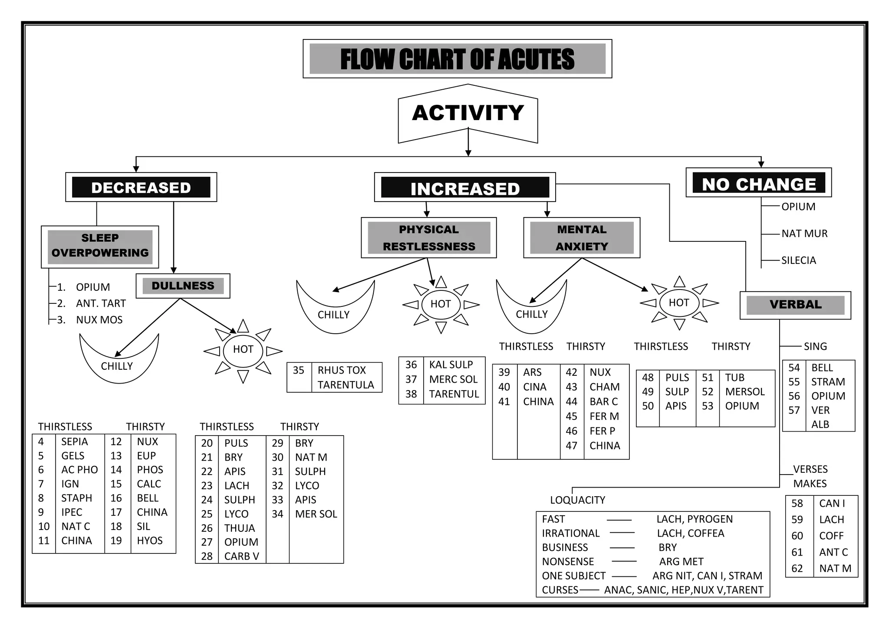

ধাপে ধাপে ওষুধ নির্বাচন
Flow Chart of Acutes — কার্যকলাপ → উপপ্রকার → তাপমাত্রা → তৃষ্ণা
সম্পূর্ণ ফ্লো চার্ট
Flow Chart of Acutes — মূল চার্টের সব শাখা ও ওষুধ (১–৬২)
মূল চার্ট (ছবি)
Dr. Prafull Vijayakar — Flow Chart of Acutes
ছোট স্ক্রিনে ছবিটি ডানে-বামে স্ক্রল করে দেখুন, অথবা বড় করে খুলুন।

সকল ওষুধের তালিকা
ফিল্টার করে নির্দিষ্ট ধরনের ওষুধ দেখুন।
১
তীব্র রোগে হোমিওপ্যাথি
ডাঃ বিজয়কর-এর মূল ভাবনা
মূল ধারণা
পুরাতন বনাম নতুন ধারণা
২
৪টি মূল অক্ষ (Activity–Thermal–Thirst–Mental)
এই ৪টি দিয়েই সিমিলিমামে পৌঁছানো যায়।
৩
হোমিওপ্যাথির ৭টি মূলনীতি
Cardinal Principles যা প্রতিটি প্রেসক্রিপশনের ভিত্তি।
৪
প্রেসক্রিপশনের সোনারী নিয়ম
Golden Rules of Prescribing
৫
উপযোগী ইঙ্গিত
Helpful Hints — দ্রুত সিদ্ধান্ত নিতে সাহায্য করবে।
৬
মায়াজম (Miasms)
রোগের গভীরতা বোঝার চাবি
হেরিং-এর আরোগ্যের সূত্র
Hering's Law of Cure — সঠিক ওষুধের প্রমাণ যাচাই